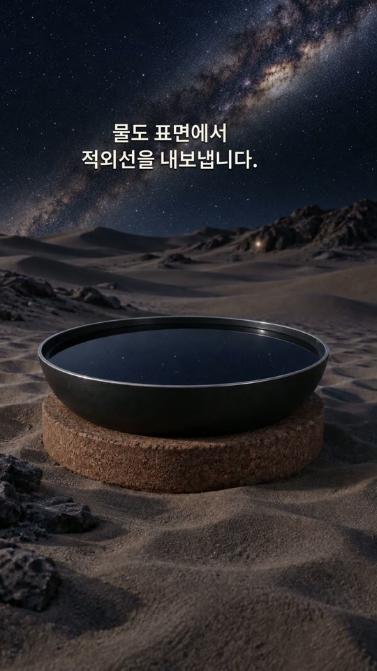
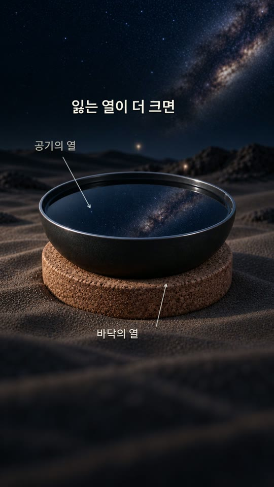
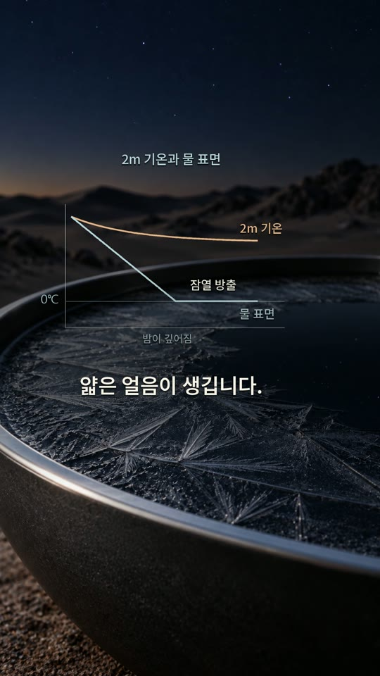

물에서 하늘로
물 표면이 적외선을 방출합니다. 그중 일부는 대기가 비교적 잘 통과시키는 파장대를 지나 우주로 나갑니다.
같은 밤, 같은 장소에서도 공기와 물의 온도는 다를 수 있습니다. 물이 내보내는 열과 되돌아오는 열을 비교하면, 얕은 물 위에 얼음이 생기는 조건이 보입니다.
· 영상과 심화 해설
얼음이 생기는 밤의 조건
기온은 공기의 온도입니다. 물 표면은 공기뿐 아니라 하늘·바닥과도 열을 주고받으므로, 공기와 다른 온도가 될 수 있습니다.
물 표면이 적외선을 방출합니다. 그중 일부는 대기가 비교적 잘 통과시키는 파장대를 지나 우주로 나갑니다.
공기와 바닥이 물을 데워도, 전체적으로 잃는 에너지가 더 많으면 물은 계속 식습니다.
얼음이 만들어질 때 나오는 잠열까지 빠져나가야 동결이 진행됩니다.
서늘하고 맑고 건조한 밤, 약한 바람, 얕은 물과 바닥 단열이 유리합니다. 모든 사막의 밤에 물이 언다는 뜻은 아닙니다.
둘 다 에너지를 잃으면 식지만, 복사를 주고받는 방식과 주변의 영향은 다릅니다.
질소와 산소는 지구 온도에서 중요한 열적외선과 약하게 상호작용합니다. 수증기와 이산화탄소는 특정 파장의 적외선을 흡수하고 방출합니다.
공기층이 복사로 얻는 에너지보다 잃는 에너지가 크면 공기 자체도 복사 냉각됩니다. 차가워진 지면에 열을 넘기거나 다른 공기와 섞이는 영향도 받습니다.
비교 대상: 공기층 안팎의 복사와 열의 이동
물은 표면 부근에서 열적외선을 내보내고, 대기와 주변 물체가 보내는 복사도 흡수합니다. 맑고 건조한 하늘은 일반적으로 아래로 보내는 열복사가 작아 냉각에 유리합니다.
여기에 공기·바닥을 통한 열전달과 증발·응결을 더하면 물의 열수지가 됩니다. 순손실이 이어지면 물 표면이 위쪽 공기보다 차가워질 수 있습니다.
비교 대상: 물 표면을 드나드는 모든 열
대기의 흡수·방출은 Met Office의 복사 전달 설명, CO₂와 적외선의 상호작용은 UCAR의 분자 설명에서 더 읽을 수 있습니다.
영상 속 장면을 멈춰 놓고, 물에 들어오는 열과 빠져나가는 열을 짚어 봅니다.



AI 이미지와 CG로 구성한 설명용 장면입니다. 분자 크기·빛의 경로·온도 변화는 실측 영상이나 실제 비율이 아닙니다. 은하수는 밤하늘의 배경입니다.
얼음이 생기는 경계에서 물 표면을 0°C, 물과 열을 주고받는 주변 공기를 5°C로 놓아 봅니다. 아래는 가능 조건을 살펴보는 단순한 계산 예시입니다.
| 항목 | 방향 | 예시 값 |
|---|---|---|
| 물 표면의 방출 복사 | 물 → 하늘 | 약 303 |
| 하향 복사 중 물이 흡수한 양 | 대기 → 물 | 240 |
| 공기와의 열교환 | 공기 → 물 | 15 |
| 바닥을 통한 열전달 | 바닥 → 물 | 5 |
| 순냉각 · 303 − 240 − 15 − 5 | 약 43 | |
이 조건에서는 공기가 영상이어도 물이 1m²당 약 43W의 열을 잃습니다. 따라서 주변 공기 온도만으로 물이 얼 수 없다고 결론 내릴 수 없습니다.
표면 방사율과 적외선 흡수율을 각각 0.96, 하향 장파복사를 250W/m², 대류 열전달계수를 3W/(m²·K)로 정했습니다. 방출량은 0.96 × σ × 273.15⁴ ≈ 303W/m², 흡수량은 0.96 × 250 = 240W/m², 공기 유입 열은 3 × (5 − 0) = 15W/m²입니다. σ는 슈테판–볼츠만 상수입니다.
바닥의 유입 열 5W/m²도 가정값입니다. 해가 진 뒤 하늘이 넓게 보이는 수평 표면을 생각하고, 증발·응결과 그릇의 옆면 효과는 생략했습니다. 공기 5°C는 이 식에 사용하는 주변 공기값이며 2m 관측 기온과 자동으로 같지는 않습니다.
이 계산은 어떤 사막의 관측값이나 일기예보가 아닙니다. 실제로는 구름·습도·바람·물의 깊이와 시간에 따라 각 항이 변합니다. 물을 0°C까지 식히는 데 드는 열과 동결 잠열을 모두 제거할 충분한 시간이 있어야 합니다.
복사·현열·잠열을 함께 계산하는 배경 원리는 NASA의 지구 에너지 수지 해설을 참고했습니다. 위 숫자는 이 문서에서 선택한 예시입니다.
영상의 짧은 문장만으로 놓치기 쉬운 조건들을 조금 더 자세히 살펴봅니다.
사막에서도 계절·고도·날씨에 따라 기온이 영하로 내려갈 수 있습니다. 영상은 그 사실을 부정하지 않습니다. 여기서 다루는 질문은 ‘위쪽 공기의 온도가 영상인 동안에도 물 표면이 먼저 얼 수 있는가’입니다.
관측 높이의 공기와 물에 바로 닿는 공기는 온도가 다를 수 있습니다. 물 표면의 동결과 기온을 비교하려면 온도계를 어디에 놓았는지도 함께 확인해야 합니다.
두 경로가 모두 있습니다. 공기층 안의 온실기체가 복사를 흡수하고 방출하므로, 그 층의 복사 순손실이 있으면 직접 식습니다. 동시에 차가운 지면과의 열교환이나 공기의 이동·혼합도 온도를 바꿉니다.
공기층을 물 표면처럼 불투명한 판 하나로 보고 방출량만 비교하면 안 됩니다. 파장별 흡수와 방출, 층 안팎으로 드나드는 복사를 함께 살펴야 합니다.
이 설명에서 중요한 과정은 흡수와 방출입니다. 대기가 거울처럼 같은 빛을 튕겨 내는 그림은 정확하지 않습니다. 분자가 흡수한 에너지는 충돌을 통해 다른 분자와 나뉠 수도 있고, 분자의 상태에 따라 적외선이 여러 방향으로 방출될 수 있습니다.
영상 속 작은 분자 모형은 이 과정을 알아보기 위한 표시입니다. 실제 공기 중 개수 비율이나 분자 하나의 움직임을 그대로 재현한 것은 아닙니다.
‘대기창’은 대기가 적외선을 상대적으로 잘 통과시키는 파장 영역입니다. 대표적으로 약 8–13μm 부근을 이야기하지만, 그 안에서도 투과율이 일정하거나 100%인 것은 아닙니다. 수증기·구름과 다른 기체에 따라 달라집니다.
물에서 나온 복사가 전부 우주로 곧장 나가는 것은 아닙니다. 일부는 대기에 흡수되고, 대기 역시 위아래로 복사를 방출합니다.
같은 표면적이라면 얕은 물은 식혀야 할 질량이 작습니다. 물은 열용량이 크므로 깊은 물을 같은 온도만큼 낮추려면 더 많은 에너지를 빼야 합니다. 표면의 얇은 얼음이 생기는 것과 물 전체가 어는 것도 다릅니다.
바닥 단열은 따뜻한 땅에서 들어오는 열을 줄입니다. 그래서 하늘을 향한 냉각이 바닥의 열 유입에 상쇄되는 정도를 낮출 수 있습니다.
증발은 물에서 에너지를 빼앗으므로 냉각에 기여할 수 있습니다. 반대로 응결이 일어나면 잠열이 들어옵니다. 복사만으로 실제 물의 온도를 모두 설명할 수는 없습니다.
따뜻한 공기에서 차가운 물로 넘어오는 열은 바람이 강할수록 커질 수 있습니다. 바람은 증발도 바꾸므로 효과가 하나로 정해지지 않습니다. 영상은 복사 냉각에 유리한 약한 바람을 전제로 합니다.
0°C에 도달하는 과정과 얼음이 자라는 과정은 따로 봐야 합니다. 보통의 담수에서 동결이 진행되려면 얼음이 생길 때 방출되는 잠열도 계속 빠져나가야 합니다. 핵생성이나 과냉각, 녹아 있는 물질에 따라서도 시작 조건이 달라질 수 있습니다.
은하수는 맑은 사막 밤의 분위기를 보여 주는 배경입니다. 냉각의 원인은 물이 열을 내보내는 속도와 주변에서 에너지를 받는 속도의 차이입니다. 은하수가 눈에 보인다는 사실만으로 물이 얼 조건이 갖춰지는 것은 아닙니다.
영상에서 들은 문장을 다시 읽고, 열수지의 가정과 계산을 직접 확인할 수 있습니다.
영상: 1080 × 1920, 78.5초 · 음악: 〈Where Gravity Fails〉 · 내레이션과 음악: 제작자 제공.
공기는 영상인데, 사막의 물은 왜 얼까요?
공기의 주성분인 질소와 산소는 열적외선을 약하게 주고받습니다.
수증기와 이산화탄소는 이를 흡수하고 방출하죠. 공기층도 얻는 복사보다 잃는 복사가 많으면 식습니다.
차가워진 지면으로 열을 넘기면서, 땅 가까운 공기도 식습니다.
물은 표면에서 적외선을 내보내고, 일부는 대기창을 지나 우주로 빠져나갑니다.
맑고 건조한 밤에는, 대기가 물로 보내는 복사열이 줄어듭니다.
따뜻한 공기와 바닥이 물을 데워도, 잃는 열이 더 크면 물은 공기보다 차가워질 수 있죠.
물은 열을 많이 저장합니다. 그래서 얕은 물과 바닥 단열이 유리합니다.
물 표면이 영 도에 도달하고, 얼 때 나오는 열까지 빠져나가면 얼음이 생깁니다. 위쪽 기온은 영상일 수 있죠.
서늘하고 맑고 건조한 밤. 약한 바람과 바닥 단열도 중요합니다. 공기도 물도, 각자의 열수지로 식습니다.